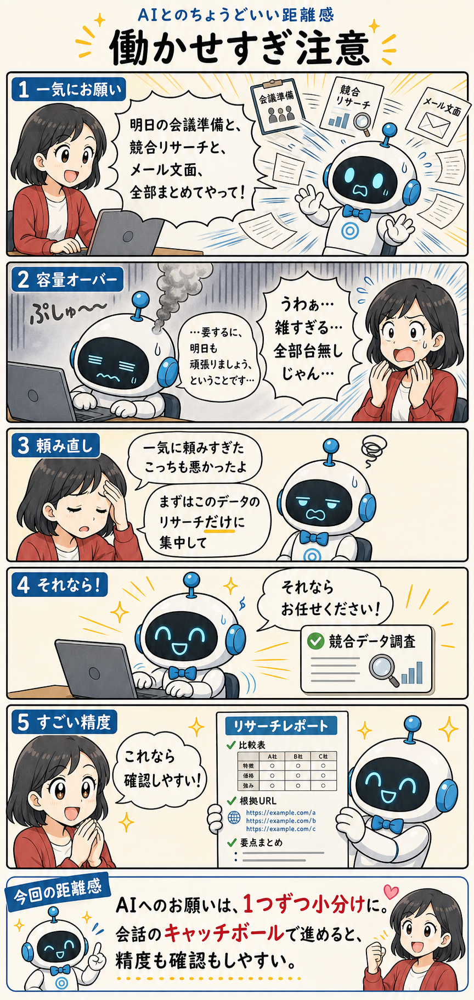

#021
働かせすぎ注意
全部まとめて、は便利そうで意外と重い。

メモ
AIにお願いしたいことが、頭の中にどさっとある日があります。明日の会議の準備、競合のリサーチ、メールの文面作成、ついでに論点整理も少し。せっかくAIがいるのだから、まとめて投げたくなる。
そこで「明日の会議の準備と、競合のリサーチと、メールの文面作成、全部まとめてやって！」と一気に送る。こちらとしては、AIなら同時にいろいろ処理できそうな気がしています。人間より速いし、きっと器用にさばいてくれるはず。
でも、返ってきたものを見ると、なんだか全体がうっすい。会議準備は「事前に目的を確認しましょう」、競合リサーチは「各社の特徴を見ましょう」、メール文面は「丁寧に伝えましょう」。最後に「要するに、明日も頑張りましょう」。いや、そういうことではあるけれど。
AIが悪いというより、頼み方が一気に広すぎたのかもしれません。複数の目的、複数の成果物、複数の判断基準が全部混ざると、AIは「とりあえず全体を丸めて返す」方向へ寄りやすい。しかも人間側も、返ってきた長い結果をどこから確認すればいいのかわからなくなる。
そこで一度ため息をついて、頼み直す。「一気に頼みすぎたこっちも悪かったよ。じゃあ、まずはこのデータのリサーチだけに集中して」。やることを1つに絞ると、急に会話がほどけます。
目的は競合データの調査。見るべき範囲、比較したい項目、最後にほしい形もはっきりする。するとAIも「それならお任せください！」と本気を出しやすい。出てきたレポートも、比較表、根拠、要点が分かれていて、人間が確認しやすい。
へ〜と思うのは、AIにとっての「たくさん頼まれる」は、人間側の確認キャパにもそのまま跳ね返るというところ。AIの出力が雑になるだけでなく、人間も全部を見きれなくなって、結局どこが使えるのかわからなくなる。
だから、AIとの作業は「会話のキャッチボール」にしたほうがうまくいきやすい。まずリサーチ、次に整理、最後にメール文面。1つずつ受け取って確認しながら進めると、AIも人間も息が合ってきます。
今回の距離感
AIへのお願いは、1つずつ小分けに。会話のキャッチボールで進めるくらいがちょうどいいかもしれません。